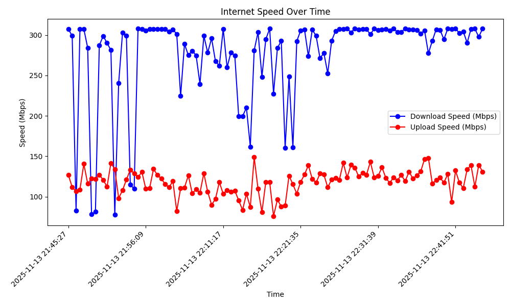

Continuous Network Performance Monitoring
Monitoring internet connectivity presents a challenge: standard online speed testing tools provide only momentary snapshots of network performance. When experiencing intermittent connectivity issues, these single-point measurements fail to capture the complete picture of network behavior over time. With this small project, I was trying to addresses that limitation by implementing a continuous monitoring solution that logs internet speeds at regular intervals, providing more complete data for troubleshooting.
The Problem
Internet service providers typically offer web-based speed testing tools that measure download and upload speeds at a single moment. While useful for quick checks, these tools are inadequate for diagnosing intermittent connectivity problems. When experiencing periodic slowdowns or disconnections throughout the day, a snapshot test may coincidentally occur during a moment of normal performance, masking the underlying issue. Without continuous monitoring, it becomes difficult to identify patterns, correlate problems with specific times of day, or provide ISPs with concrete evidence of service degradation.
The Solution
I developed a Python-based application that performs automated speed tests at configurable intervals over extended periods. The script leverages the speedtest-cli library to measure download and upload speeds, logging all results to a CSV file for later analysis. The implementation includes robust error handling to manage network failures gracefully, ensuring the monitoring process continues uninterrupted even when individual tests fail.
Logged at 2025-11-13 21:45:27: 307.29 Mbps down, 126.85 Mbps up Logged at 2025-11-13 21:45:58: 298.83 Mbps down, 111.70 Mbps up Logged at 2025-11-13 21:46:29: 82.62 Mbps down, 106.55 Mbps up Logged at 2025-11-13 21:47:00: 307.21 Mbps down, 108.73 Mbps up Logged at 2025-11-13 21:47:29: 307.43 Mbps down, 140.49 Mbps up Logged at 2025-11-13 21:48:00: 284.10 Mbps down, 116.13 Mbps up Logged at 2025-11-13 21:48:31: 78.07 Mbps down, 122.36 Mbps up Logged at 2025-11-13 21:49:02: 81.15 Mbps down, 121.79 Mbps up
Real-time terminal output showing speed measurements at ~30-second intervals
The application accepts two key parameters: the interval between tests (in seconds) and the total monitoring duration (in hours). This flexibility allows users to customize the monitoring frequency based on their specific needs—from frequent 10-second intervals for intensive troubleshooting to hourly measurements for long-term baseline establishment.
Key Features
Automated Continuous Monitoring: The script runs autonomously in the background, performing speed tests at user-defined intervals without manual intervention. This enables overnight or multi-day monitoring sessions that would be impractical with manual testing.
Data Logging: All measurements are recorded to a CSV file with timestamps, creating a permanent record that can be analyzed, shared with ISPs, or archived for future reference. The structured format facilitates further analysis using additional tools or custom scripts.
Built-in Visualization: The application includes a plotting function using matplotlib that generates time-series graphs of download and upload speeds. This visual representation makes it immediately apparent when and how connectivity issues occurred, revealing patterns that might not be obvious in raw data.

Example output after 1 hour of data collection.
Technical Highlights
The speedtest-cli library performs full-fledged speed tests similar to browser-based tools, which consume bandwidth and take time to complete. The configurable interval parameter allows users to find an appropriate balance between data granularity and network impact.
Link to Code
Source code is available on GitHub. Feel free to explore, fork, or contribute!
View on GitHub →